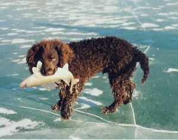
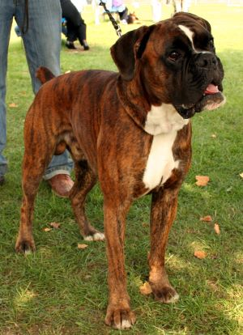
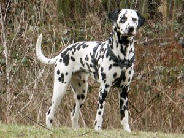
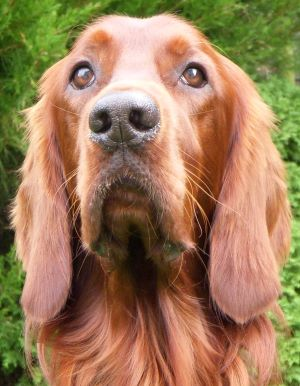

Amerikai vízispániel
Az amerikai vízispániel (American water spaniel) egy spániel, amely az Amerikai Egyesült Államokból származik. Közepes méretű, életerős kutya. Elsősorban vízi vadászatra tenyésztették ki, de családi kutyaként is tartható. Közepes termetű, feje a spánielekéhez hasonlítható. Lelógó fülei vannak. Háta kiegyensúlyozott, tartós. Lábai jó csontozatúak. Szeme barnás színű. Szőrzete dús, fodros, így védi a víztől.
Boxer
A bokszer napjaink egyik legnépszerűbb kutyafajtája. Sokak szerint marcona kinézete ellenére egy nagyon jóindulatú, barátságos, de ugyanakkor bátor fajta, mentes minden hátsó szándéktól. A bokszer távoli őseit nehéz lenne meghatározni. Annyi mindenesetre bizonyosnak látszik, hogy az ókori szelindekek, molosszerek leszármazottja, melyek az ázsiai hódító seregekkel érkeztek Európába.
Dalmata
A dalmata (horvátul: Dalmatinski pas) egy dalmát nemesítőktől származó kutyafajta, a jelenlegi Horvátország területéről. Ősi fajta, mely egyetlen ma ismert kutyafajtával sem mutat genetikai rokonságot. Eredetét tekintve három elmélet létezik. Az első elmélet szerint a fajta Dalmáciából származik, ahol a 18.század végén jelentek meg dalmata kutyára hasonlító ábrázolások (napjainkban ez az elmélet vált a legkevésbé valószínűvé).
Ír szetter
Kialakulása az 1700-as évekre tehető. Írországból származó fajta. Kialakításában szerepe lehetett az ír vízispánielnek, a gordon szetternek és a springer spánielnek. Marmagassága 58-67 centiméter, tömege 25-32 kilogramm. Vörös-fehér színezetű rokonainál kecsesebb felépítésű, élénk, mozgékony, játékra mindig kész kutya.